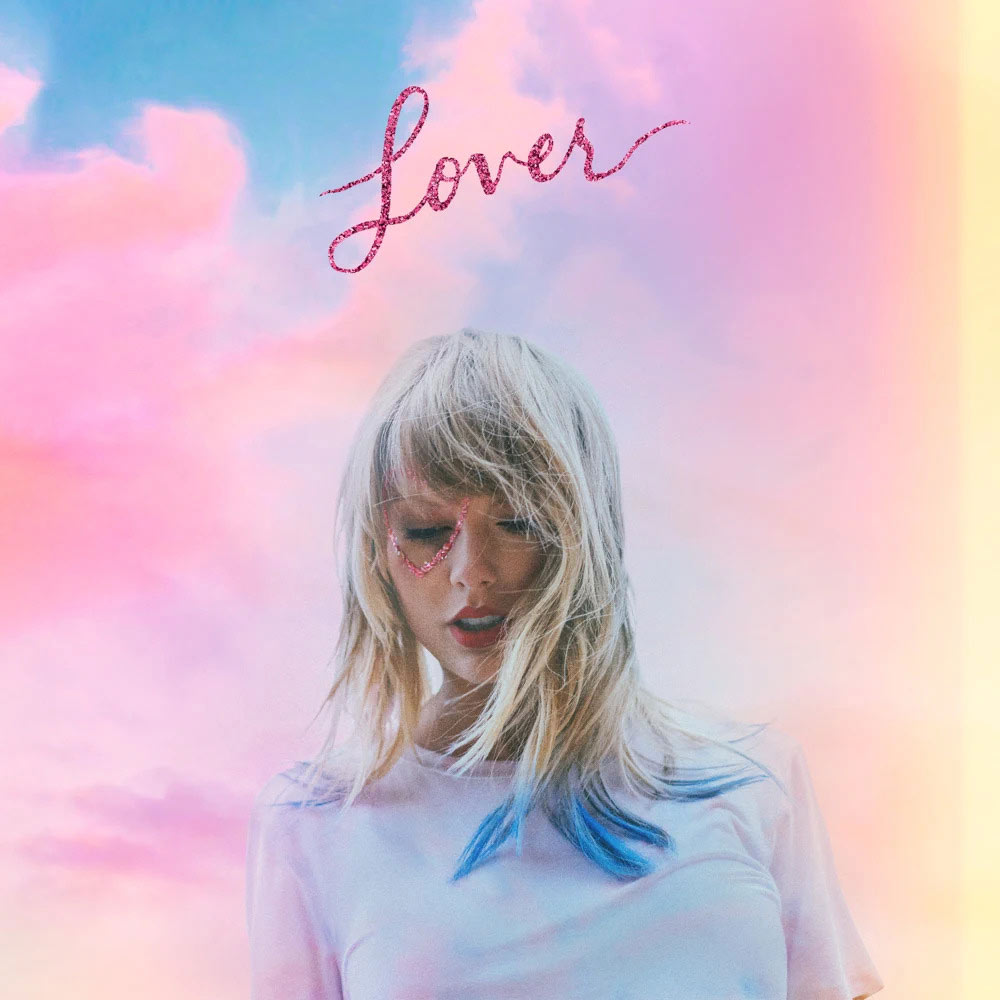

- Apple Music
-
Evermore (2020)
- Willow
- Champagne problems
- Gold rush
- 'Tis the Damn Season
- Tolerate It
- No Body, No Crime (feat. Haim)
- Happiness
- Dorothea
- Coney Island (feat. The National)
- Ivy
- Cowboy like me
- Long story short
- Marjorie
- Closure
- Evermore (feat.Bon Iver)
- Apple Music
-
Folklore (2020)
- The 1
- Cardigan
- The Last Great American Dynasty
- Exile (feat. Bon Iver)
- My Tears Ricochet
- Mirrorball
- Seven
- AugustThis Is Me Trying
- Illicit Affairs
- Invisible String
- Mad Woman
- Epiphany
- Betty
- Peace
- Hoax
- Apple Music
-
Lover (2019)
- I Forgot That You Existed
- Cruel Summer
- Lover
- The Man
- The Archer
- I Think He Knows
- Miss Americana & the Heartbreak Prince
- Paper Rings
- Cornelia Street
- Death by a Thousand Cuts
- London Boy
- Soon You'll Get Better (feat. the Dixie Chicks)
- False God
- You Need to Calm Down
- Afterglow
- Me! (feat. Brendon Urie of Panic! at the Disco)
- It's Nice to Have a Friend
- Daylight